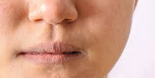
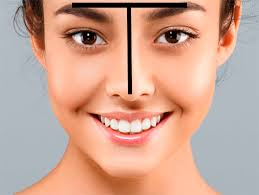

Hay cuatro tipos básicos de piel sana: normal, seca, grasa y mixta. El tipo de piel se determina genéticamente. No obstante, el estado de nuestra piel puede variar considerablemente según los diversos factores internos y externos a los que es sometida.
Piel seca
Se utiliza para describir un tipo de piel que produce menos sebo que la piel normal. Como consecuencia de la falta de sebo, la piel seca carece de los lípidos que necesita para retener humedad y formar un escudo protector frente a influencias externas.

Piel grasa
La piel grasa o seborrea es un exceso de sebo que suele mostrarse en forma de zonas brillantes sobre las áreas centrales del rostro, especialmente en la frente y la nariz. Los poros de la piel se dilatan y la piel es más gruesa. En los casos más graves, puede percibirse una capa de grasa al tocar la piel. La seborrea también puede darse en el cuero cabelludo, y hacer que tu cabello esté graso y pegajoso.
Piel mixta
La piel mixta se denomina así porque es una combinación de dos tipos de piel: normal-seca y grasa o con impurezas. La piel mixta presenta un aspecto brillante y tiende a desarrollar pequeñas impurezas, sobre todo en la llamada zona T (frente, nariz y barbilla).

Piel normal
Normal" es un término utilizado ampliamente para referirse a la piel bien equilibrada. El término científico para piel sana es eudérmica. Aunque la zona T (frente, mentón y nariz) puede ser algo grasa, el sebo y la humedad globales están equilibrados y la piel no es demasiado grasa ni demasiado seca.
.PNG)